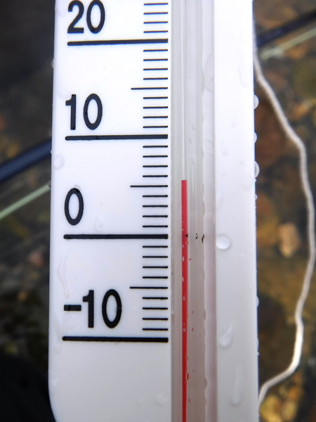
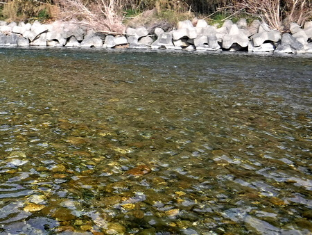
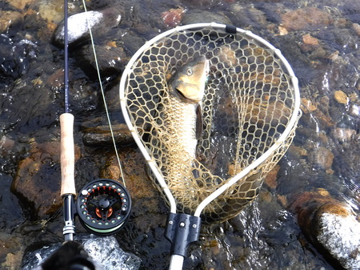
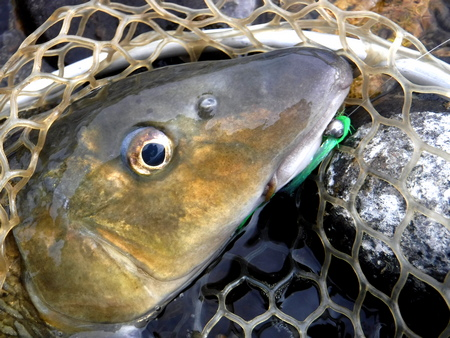
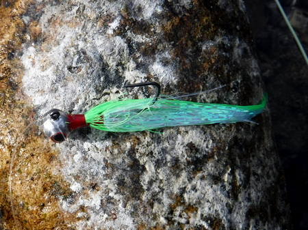
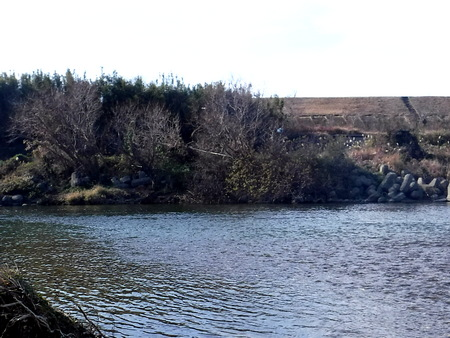

釣行日誌 故郷編
2021/01/03 フライで初めての１匹
コロナ禍の自粛ムードで開けた2021年、早々と眠りに就いたので、丑三つ時に起き出して、ジグヘッドストリーマーを巻く。
Jensen Fly Fishing さんの YouTube 動画 を見て、『これならあいつをフライで釣れそうだ.....』と思ったのだ。
古くからの釣友、鰐部さんから頂いた、蛍光グリーンの派手なポーラーベアがあったので、それと DECOY Plus Magic VJ-74 ジグヘッド 1/16OZ（1.8g）を使い、見よう見まねでジグヘッドストリーマーを巻く。
Size-2 と表記されたフックの軸はいささか細いが大丈夫だろうか？ またぞろ耳や後頭部、ほっぺたなどを釣ってもイケナイので、しっかりラジオペンチでバーブをつぶしておく。
夏場のように暗いうちから突撃しても寒いだけし、連中もこの厳寒の中ではあまり口を使わないだろうと踏んで、ゆっくりとお弁当（サンドイッチと魔法瓶にインスタントポタージュスープ）を作って、釣具一式を愛車、ホンダ・リトルカブに積み、昨年末、ラパラ CD-7 で良い思いをした橋の下の長渕へ向かう。
９時過ぎに現場に着くと、さすがに人ケは無い。まず水温計をスリングバッグから取り出し、結わえたタコ糸を延ばし流れに漬けておいてからタックルをセットする。今日は思うところあってフローティングラインにフロロ 8lb を直結し、モノフィラメントリーダーの付け根にシール式オレンジ色のインジケーターを付ける。これが無いと、フライがどのあたりを流れているか、沈んでいるか、見当が付かないのである。
昨年はこの場所で、シンキングのシューティングヘッドを使って、目いっぱいウェイトを巻き込んだストリーマーを引いたところ、根掛かりの連発で、30分で5本も失ってしまった。そこで、フックをジグヘッドタイプに変え、フローティングラインで水面上から吊り下げるようにしたら、根掛かりが減るのでは？という目論見である。
DIY店で買った水温計、230円！ を引き上げてみると、5.5℃。１月としてはこんなものか.....

いよいよ、狙いを付けたホットスポットへと静かに、静かに歩みを進め、慎重に立ち位置を決める。賢くはないが、臆病なニゴイ（笑）を相手にする場合、ひょっとすると山奥のアマゴやイワナ以上の慎重さが求められることを、この１年半の間に学んだのだ。
主流が対岸の護床ブロックに突き当たって出来ている三角の緩流部に、ドッコイショっと重たいジグヘッド・ストリーマーを放り込む。去年のはここの深みで大物がラパラのオレンジをしっかり咥えたのだ。
釣り始めて15分で、巻いてきた５本のうちの１本を根がかりで失う。（泣）

遠投ができないので、なんとか、重たいフライを主流に落し、どんどんとラインを繰り出して流れに乗せ、速い流れと緩流部の境界、いわゆるエッジ部分にストリーマーを送り込む。
フライが川底まで沈むのを待ち、ゆっくりゆっくり小刻みにラインを手繰ってアクションを付けながらリトリーブしてくる。
と、10投目くらいでライン先端のオレンジ色が見えなくなった。
『？？、！』
突如ロッドが引き込まれ、重い揺動が伝わってくる。すかさずラインを引いて合わせる。ぐぃ～っと竿が引き込まれ、はるか遠くの水面を割って黄金色が炸裂する。
「やったぁ～！！ とうとう掛けた！ ニゴイだっ！」
ところが、情けない話ながら、実に久しぶりにフライタックルで魚を掛けたので、ラインの処理やリールの扱い方をすっかり忘れてしまっている。（笑）
『あれれ？ ラインの弛みはどうするんだったっけ？ どっちへノブを回すとドラグがきつくなるんだ？』
久しぶりの大物に、愛用の MaxCatch Nano 9ft-4pcs、８番ロッドが思いっきりしなる。なにせ、これまでこの竿では偶然釣れたナマズしか相手にしたことはなかったのだ。あの時はマーキスの６番を使っており、口に掛かった黒いウーリーバガーが外れ、一瞬後にスレ掛かりになってしまい、バッキングまで引き出されてしまい本当に往生した。
何とか余りのラインを手繰り込み、リールで巻き取る。リールファイトに移ったところで少しドラグを緩めようとしたが、慣れないリールなので要領を得ない。そうする間も、遠くのニゴイは主流に飛び込んで異様な力を発揮している。コストパフォーマンスに優れた MaxCatch の ECO 7/8番リールだが、ドラグがあまり音を立てないので、どのくらいの勢いで魚体が走っているかがつかめない。何とか思ったとおりにドラグを調節し、ファイトを続ける。
主流から緩流部へ引き寄せ、とうとう足下まで寄せて来た。人影を見たニゴイが急に左右に走る。
『そろそろネットが届くかな.....』
と思って背中に手を回し、ネットのグリップを掴み、ぐいっと引っ張ってネットリトリーバーから外す。が、しかし、こんな時に限ってトラブルに見舞われるものだ。釣りに気が急いて、バイクから降ろしたままで、タックルをセットしたときに伸縮式の柄を完全に延ばし、所定の位置にノッチボタンで固定するのを忘れていたのだ。そのため、ネットの柄は短いままだし、魚体を掬おうとネットを差し出しても、フレームが左右に傾いて上手くランディングできない。
『ああ！ なんというドジ！』
ロッドを持っている左手でネットの柄を掴み、ノッチをセットしようかとも思ったが、そんなことをしていれば、バーブレスフックが外れるのがオチだろう。さらにラインを巻き、思いっきり寄せておいて、グラグラ傾くネットでなんとか魚体を拾い込んだ。
『おお、重い！』
喜びと安堵とが入り交じったため息をつきながら、浅場にネットを持って行く。

『ああ、苦節１年半、ルアーで回り道もしたけど、ようやく念願のニゴイ、本命をフライで釣ることができた！』

感慨に浸りながら、ネットの中で荒い息をしている魚体を見つめる。おそらく昨年秋にミノーで釣ったのと同じ魚だろう。（笑）

ダイソーで買った先曲がりのラジオペンチを使い、魅惑的なクチビルからジグヘッド・ストリーマーを外し、そっとリリースしてやる。向こうにしてみれば毎回毎回いい迷惑であろう。キャッチ・アンド・リリースと言えば聞こえは良いが、要は単なる「弱いものいじめ」だからなァ.....。もっとも僕にとってニゴイはかなりの「強敵」であるのだが。
非常に気分を良くして、続く主流のこちら岸の深み、エッジ付近を30分ほど探ってみるが、続くアタリは無い。このへんで河岸を変えようかと、ラインを巻き取ってバイクの方へ戻って行くと、川原まで軽のワンボックスで乗り入れた人が、お洒落なステンレススチール製の焚き火台で、独り焚き火を楽しんでいる。久しぶりに薪の燃える火を見て、煙の臭いをかいで、懐かしい気持ちになった。子供の頃、実家の風呂は薪で沸かす五右衛門風呂であり、僕が毎日の風呂焚き当番だったのだ。
挨拶をして、しばし会話をした後、カブに戻る。河川敷の芝生広場にはおじいさんが散歩しており、この人ともしばし立ち話をした。その後で、毎度おなじみの下流のポイントへ向かう。
今日は左岸側から忍び寄っていくが、夏場よりはるかに水量が少ないので、流れ込みの淵は浅くなっており、どこからもニゴイの反応は無く、魚影も見えない。僕のウェーディングが魚たちを追い払ってしまったのかもしれなかった。お昼時になったので、どっこいしょと砂地へ腰を下ろし、しばし、ランチ休憩とする。

おなかがいっぱいになってからもしばらく粘ってみたが、背後の枝にフライが引っ掛かったり、しだいに空が曇って来て風が冷たくなったので、今日は気分の良いうちに切り上げることとした。
別にフライで釣り上げたからエライとは言えないが、失敗と苦戦の続く中、手製フライの数知れぬ損失にもめげず、独力で、より高いハードルを超えたという感慨と満足感があった。今日の１匹はまぐれだったとしても。
例年なら参拝客で賑わう御稲荷さんに初詣に行くところだが、今日は開高健さんが言うところの「大聖堂」を訪れ、思わぬ「大吉」を引いた。2021年は縁起の良い年になるかな？
釣行日誌 故郷編 目次へ
サイトマップ
ホームへ
お問い合わせ